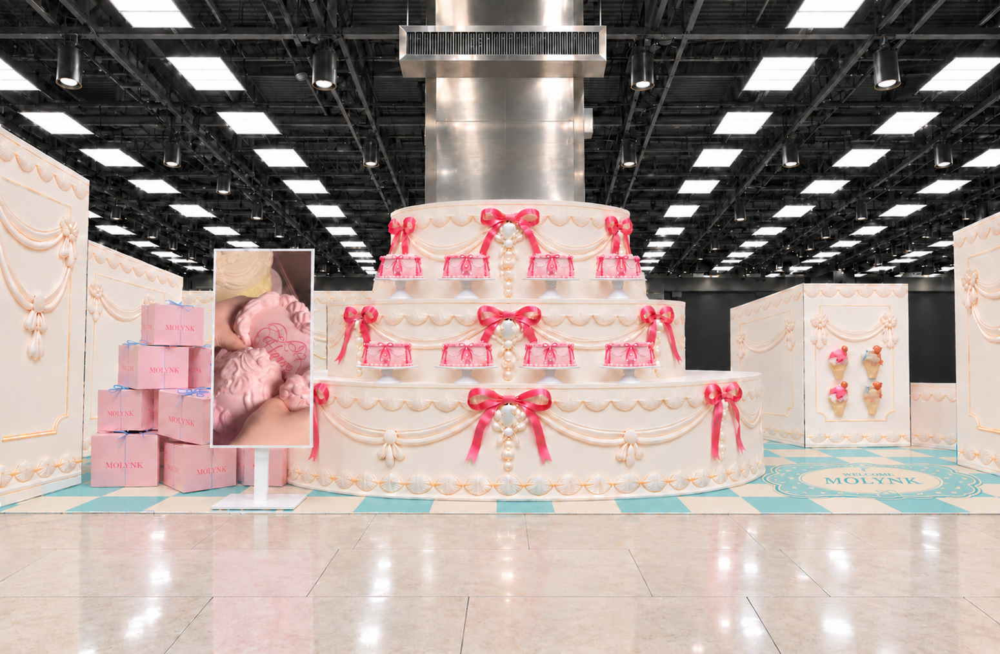
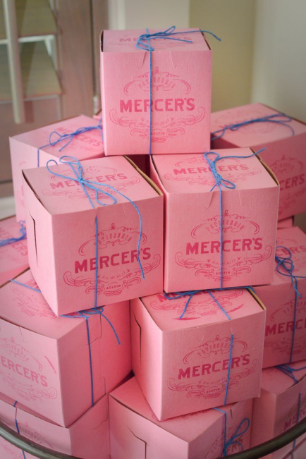
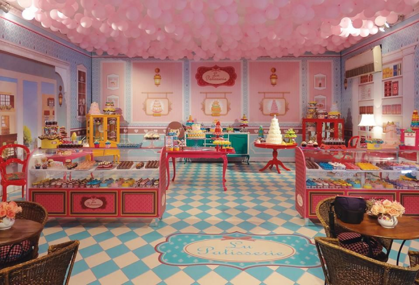
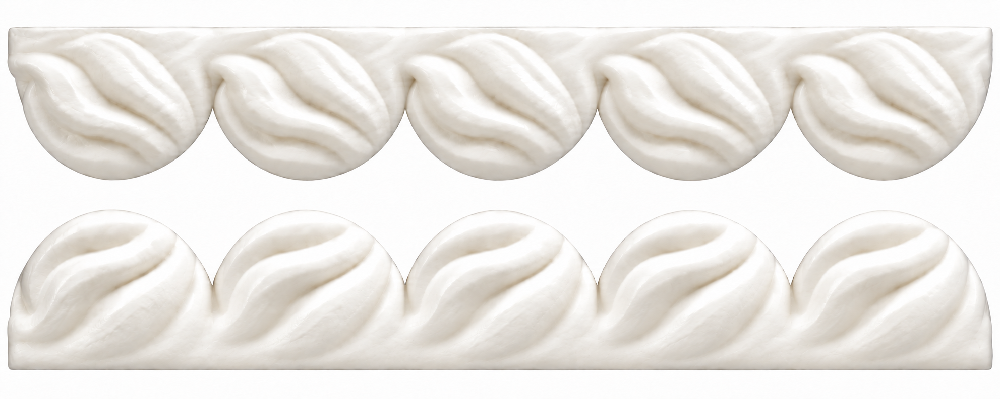

생크림 화이트
CW01- CMYK · Japan Color 2001 Coated
- C0 · M1 · Y3 · K0
- 팬톤 근사 후보
- 백색 소재 기준 · 별색 미지정
생크림 몰딩·벽체·대형 케이크 바탕
선명한 브랜드 키핑크와 부드러운 공간 컬러.
화면용 HEX, 인쇄용 CMYK, 팬톤 근사 후보를 함께 확인하세요.
로고·브랜드 타이틀·주요 인쇄 그래픽에 사용하는 선명한 핑크입니다.
CMYK: Japan Color 2001 Coated · 상대적 색도계 변환 후 반올림. 팬톤 191 C는 실물 칩 대조용 근사 후보이며, 화면 참고색 #EF426F는 키핑크와 완전히 같지 않습니다.
색상 출처: 이전에 저장한 몰링크 공식 홈페이지의 테마색. 위 CMYK와 팬톤 후보는 이번 가이드에서 정한 제작 참고값입니다.

민트 C67 · M0 · Y35 · K0를 기준으로, 핑크와 크림도 회색기를 줄여 맑게 조정했습니다. 공간 컬러는 CMYK를 우선 사용합니다. 밀키 핑크와 민트의 HEX는 첨부 Illustrator 작업 화면에 맞췄습니다.
생크림 몰딩·벽체·대형 케이크 바탕
공간·패키지의 부드러운 핑크 면
체크바닥·웰컴매트의 민트 부분
넓은 그래픽 배경·보조 면
실물 리본·작은 강조 요소
체크바닥·웰컴매트의 밝은 부분
케이크박스 작업 화면의 CMYK와 HEX를 그대로 기록했습니다. 버터크림은 생크림 화이트와 별도로 사용하며, 아이스블루는 민트의 밝은 짝색입니다.
핑크 패키지의 크림 바탕·패턴 보조 면
민트 패키지의 밝은 바탕·패턴 보조 면
공간 밀키 핑크 + 버터크림
C0 M35 Y12 K0 + C0 M5 Y10 K0
민트 블루 + 아이스블루
C67 M0 Y35 K0 + C12 M0 Y3 K0
레퍼런스의 핑크와 체크바닥 조합을 참고합니다. 실제 공간 조명은 입구 히어로처럼 밝게 유지합니다.

핑크 바탕과 한 톤 진한 인쇄색의 조화.
이미지 다운로드 ↓
민트 블루·크림 베이지와 핑크를 연결하는 색감.
이미지 다운로드 ↓
노란 바닥 베이지와 구분되는 밝은 생크림색입니다. 부드러운 상부광과 낮은 명암 대비로 볼륨을 표현합니다.
전개도의 반원 외곽을 유지하고 직선 띠와 자연스럽게 연결합니다. 리본과 로고는 별도 실물 제작으로, 생크림 시트 그래픽에는 인쇄하지 않습니다.
몰딩 스터디 다운로드 ↓키핑크·공간 6색·패키지 서브 2색, 총 9색의 제작 참고값입니다. CMYK 순서는 C / M / Y / K이며, 팬톤은 실물 칩 대조용 근사 후보입니다.
| 컬러 | HEX · 화면 참고 | CMYK % | 팬톤 근사 후보 |
|---|---|---|---|
| 몰링크 키핑크 | #EB4165 | 0 / 90 / 43 / 0 | PANTONE 191 C ↗ · 근사 후보 |
| 생크림 화이트 | #FFFDF9 | 0 / 1 / 3 / 0 | 백색 소재 기준 / 별색 미지정 |
| 공간 밀키 핑크 | #F7BDC7 | 0 / 35 / 12 / 0 | PANTONE 699 C ↗ |
| 민트 블루 | #47B9B4 | 67 / 0 / 35 / 0 | PANTONE 3258 C ↗ |
| 라이트 핑크 | #FCEBED | 0 / 12 / 4 / 0 | PANTONE 705 C ↗ |
| 포인트 핑크 | #EC7392 | 0 / 70 / 20 / 0 | PANTONE 190 C ↗ |
| 바닥 크림 베이지 | #FDE7C2 | 0 / 12 / 28 / 0 | PANTONE 7506 C ↗ |
| 버터크림 · 서브 | #FFF5E9 | 0 / 5 / 10 / 0 | 미지정 · 실물 칩 대조 후 선정 |
| 아이스블루 · 서브 | #E5F4F8 | 12 / 0 / 3 / 0 | 미지정 · 실물 칩 대조 후 선정 |
공간 6색은 화사한 발색을 위해 CMYK 배합을 직접 조정했습니다. 민트는 지정값 C67 M0 Y35 K0입니다. 밀키 핑크·민트·서브 2색의 CMYK와 HEX는 첨부 Illustrator 화면의 표시값입니다. 해당 문서의 프로파일은 미확인입니다. 나머지 공간색 HEX는 Japan Color 2001 Coated → sRGB 변환 참고값이며, 키핑크는 기존 sRGB → CMYK 변환값입니다. ASE를 불러온 뒤 Illustrator 문서 프로파일과 출력 샘플을 확인하세요.
C는 Solid Coated 종이 칩 기준입니다. 새 색감에 맞춰 제안한 비교 후보이며, 공식 동등색·최단 색차 매칭이나 확정 별색이 아닙니다. 이번 CMYK 배합을 팬톤 공식 배합으로 해석하지 마세요. 리본·시트·도장에 적용할 때는 실물 칩 및 제작 소재를 대조하고, 생크림 화이트는 백색 소재부터 확인합니다.
아래 PDF·PNG·ZIP·ASE·CSV는 2026.10.07 공간 6색 자료이며, 새 키핑크·화사한 컬러 조정·패키지 서브컬러가 반영되지 않은 보관용 자료입니다. 제작에는 페이지 상단의 최신 9색 CMYK ASE와 CSV를 사용하세요.